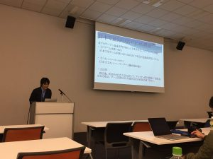
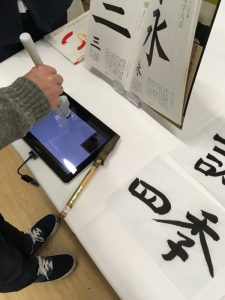
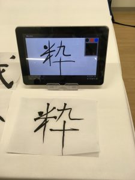

今回は、11月12日(土)~11月14日(月)の三日間にわたり大阪で開催された
Entertainment Computing 2016
についてのレポートとして、口頭発表とデモ発表をした感想と、他の発表者の発表の聴講や体験をした感想を書いていきます。
本記事の流れとしましては、
①1日目：自分の口頭発表とデモ発表について
②2日目：他の発表者のデモ発表について
③3日目：他の発表の口頭発表について
④全体の感想
のように書いていきます。
①1日目：自分の口頭発表とデモ発表について
「RTSゲームのプレイログ分析によるプレイヤー養成システム」
というタイトルで発表しました。
仮説を持って継続プレイするプレイヤーと、ゲームのロジックだけで遊んでしまい、因果と偶然がわからないプレイヤーではeSportsプレイヤーとしての素養が違うという仮説に基づき、ログを分析しました。
今回のデモ発表では、視線追跡の表示や、リプレイの表示を多重化画面で表示することにより、リアルタイムにプレイヤーや周囲の観客にフィードバックを返すデモ発表を行いました。

口頭発表の反省
棒読み気味の発表になってしまったこと、
質疑応答の際に焦ってしまう部分があったところです。
この反省を生かし、卒論発表ではもっと抑揚をもって伝えていきます。
デモ発表の反省
慣れるまで伝えたい事を伝えるまでにわかりにくい説明をしてしまったことです。
慣れてからはどこを伝えるかが明確にわかり、そのために必要な説明はなにか、がわかっていましたが、最初のほうは話が長くなってわかりにくい部分がありました。
これは単純に自分の練習不足があると思ったので反省します。
発表を通した気づき
他の人に見てもらう、聞いてもらうという事は、とても貴重で大切だと感じました。
普段の自分視点だけでは思い浮かばないような意見や、今後の展開、現状の改善点など
貴重な意見を他の人に公開することでフィードバックしてもらえます。
これは、非常にためになることだと、発表を通して感じました。
以下デモ発表の内容です。
②2日目：他の発表者のデモ発表について
2日目からは、自分の発表はないので聴講と体験をしました。
など、19ものデモ発表が行われていました。
どの展示も面白く、普段みない分野に関しての興味がわいたりしました。
今回体験した中で、一番良いなと思ったのが
八戸工業高等専門学校 古川さんのタブレット端末と無線筆型デバイスを用いた仮想書写支援システムです。
 
こちらのペルソナが
一般的に小・中で行う書道を学ぶことに、壁のある人達となっており。
その人たちが書道をするには比較的準備が大掛かりになってしまうため、小型化を目指したとのことで、
実際の筆にセンサーをつけているため、筆で書いている感覚はほぼ同じでした。
自分の思った改良、今後の開発点については、
もっと太い書き方にも対応できるようにすること。
墨の減り具合をもっと忠実に再現すること。
半紙の書き心地を再現すること。
をすることでもっとよくなるのではないかと考えました。
③3日目：他の発表の口頭発表について
3日目は口頭発表がたくさんあったので、そちらを聴講していました。
他大学の教授や、企業の人の発表はとても勉強になりました。
伝え方や話方がわかりやすく、この発表ではなにが言いたくて何をしたのか、今後どうしていきたいかがわかりました。
また、発表後の質疑応答に関してもレベルの高いディスカッションが多く
やはり、発表や他者の存在の大切さを学びました。
3日目で印象的だったのが
北海道大学 下森さんの「HMDを用いた俯瞰的視点変換トレーニング効果の検証」
という発表が面白くて印象に残っています。
こちらは、ゲームではなく実際のサッカーを題材にしており、
プロアスリートの中でも数名が持つといわれている俯瞰的視点をとらえるトレーニングについての研究で
HMD内でサッカーのゲームでなく動画で行い、俯瞰視点と一人称視点を切り替えてトレーニングを行い、それを実際のサッカーで使えるようにするという内容です。
これがうまくいけば、すごい新しいトレーニング法だし、人によって俯瞰視点のイメージが異なったりするため、大変そうだがおもしろいと感じました。
④全体の感想
楽しかったです。
研究的には、
やはり自分の研究を多くの人に聞いてもらう、見てもらうということは
今まで持てなかった視点や気がつかなかった事に気がつかせてもらえます。
そこから、今後の研究に生かすことが考えられたり、深めて行けたりするので学会で発表するということはとても良い経験になると感じました。
人間的には
熟練者の発表や、デモを聞くことで他の人の伝え方や質問の仕方がとても参考になりました。
また、関西の人とは普段あまり関わりませんが、どこの店やコンビニでも関西弁の関西人の方なのでそれはそれで面白かったです笑
そして、
やっとエスカレーターに違和感を覚えずに済みます。
以上です。